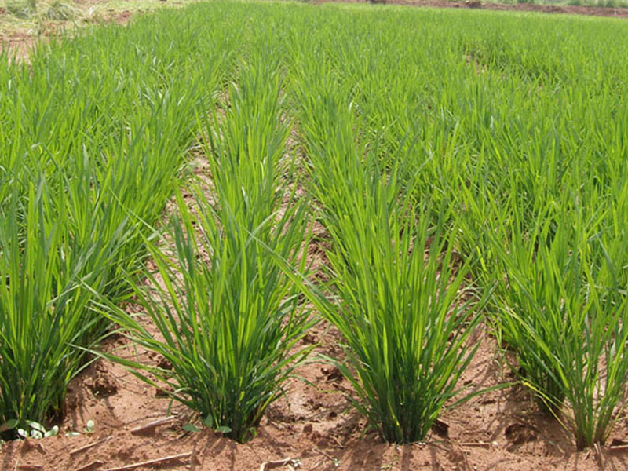

| Weed Management |
|  |
Pre emergence application of pendimethalin at 0.75 kg/ha followed by two hand weeding or mechanical weeding on 25 and 45 DAS
PE pendimethalin 1.0 kg ha-1 along with single tyne sweep weeding on 45 DAS which was comparable with PE along with hand weeding. |
| |
|